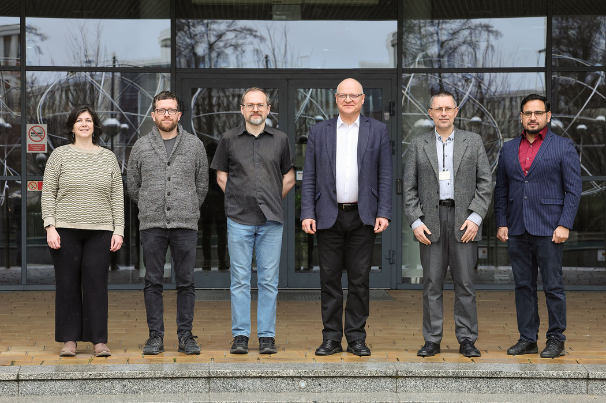

Our department is part of the Institute of Physics. We are located on the second floor of part B of the Faculty of Physics, Astronomy, and Applied Computer Science of the Jagiellonian University building:
The study of the properties of the forces acting between the components of atomic nuclei—protons and neutrons—remains relevant, despite the vast knowledge gained since the discovery of the atomic nucleus in 1911. These forces are responsible for the existence of the atomic nuclei. They determine the mechanism of nuclear reactions and radioactive decays, including those crucial to nuclear energy.
Several-nucleon systems are an ideal laboratory for studying nuclear forces. For such systems, we can precisely solve fundamental equations (Schrödinger, Lippmann-Schwinger, Faddeev), which lead from interactions between nucleons to the properties of nuclei (binding energy, size, distribution of matter and electric charge) and the probabilities of various nuclear reactions.
In systems with three nucleons, not only interactions between two nucleons but also multi-nucleon interactions occur. The three-nucleon interaction plays a special role, and fully understanding its nature is one of our most important research goals.
We use exact solutions of equations containing models of nuclear interactions not only to describe processes involving several nucleons but also to study the interactions of electrons, photons, pions, muons, and neutrinos with systems of several nucleons. In our research, we utilize supercomputers containing tens of thousands of processors, and our calculations are used to design experiments and analyze experimental data obtained at numerous research centers, including HIGS (Durham, USA), JLab (Newport News, USA), MAMI (Mainz, Germany), RIKEN (Wako, Japan), RCNP (Osaka, Japan), and the Bronowice Cyclotron Center.
We are currently focusing on utilizing the latest nuclear forces and currents derived from Chiral Effective Field Theory, closely related to QCD – the fundamental theory describing the strong quark interaction.
Our research is conducted in part as part of the international LENPIC project and in bilateral collaboration with numerous research centers worldwide, in particular the Ruhr University in Bochum (Germany), the Kyushu Institute of Technology in Kitakyushu (Japan), the Jülich Research Center (Germany), the University of Pisa (Italy), and INFN-Pisa (Italy).
Materials related to department meetings, including presentation files, are available here. Access is restricted, requires login.